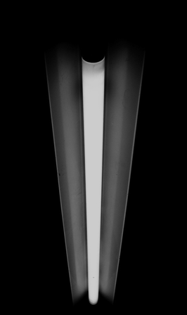
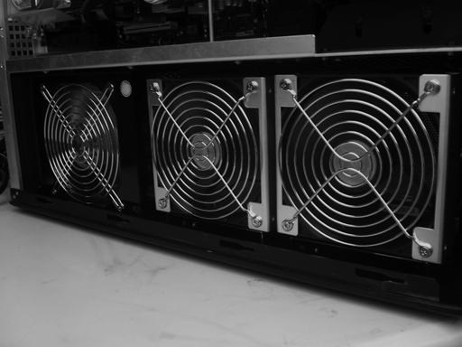
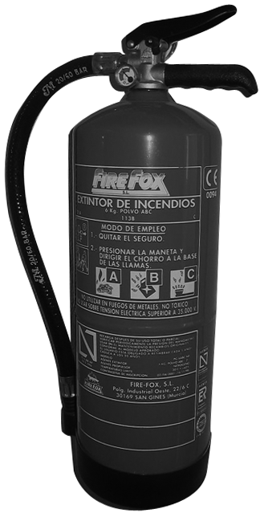
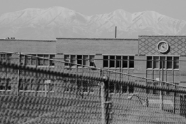
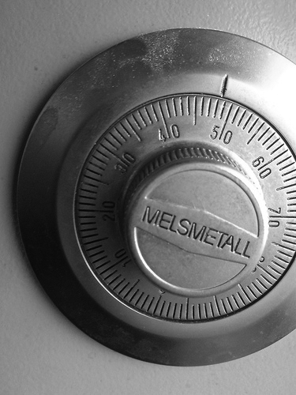
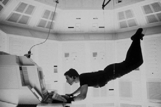

Seguretat passiva
Durant les dècades de 1960 i 1970, la seguretat física dels equips informàtics era una tasca molt menys complexa que avui en dia. Els ordinadors només estaven a l’abast de grans corporacions que no n’acostumaven a tenir més d’un. El maquinari ocupava sales enormes que eren a les entranyes dels edificis de les grans corporacions i, tot i accedir-hi, molt poca gent sabia què fer-ne.
A l’actualitat gairebé tothom té un ordinador en l’anomenada societat del primer món. Hi ha persones que disposen de portàtils, ordinadors de butxaca i altres dispositius mòbils. Gràcies a les tecnologies sense fil es pot accedir a qualsevol equip sense tenir-hi accés físic. Protegir tots aquests dispositius contra robatoris, fraus, sabotatge, vandalisme i altres riscos és una tasca cada vegada més complexa i costosa.
La tecnologia i els entorns esdevenen més complexos amb la qual cosa apareixen nous riscos. Moltes empreses han tingut robatoris de dispositius o fugues d’informació i, en els pitjors casos, crims com ara assalts a punta de canó o tirotejos d’antics empleats ressentits.
Protegir físicament els equips informàtics és una tasca fonamental com a base de la seguretat informàtica global. Per aconseguir uns bons resultats cal aplicar una estratègia de defensa en capes. Així es desplegarà tota una sèrie de controls i mesures que combinats garanteixin uns bons nivells de seguretat.
Un exemple d’estratègia de defensa en capes seria instal·lar una tanca perimetral, seguida dels murs de les instal·lacions, llavors un accés mitjançant targeta, més una vigilància de guardes de seguretat.
Tenir uns nivells alts de seguretat física pot ser costós i impactar negativament en la productivitat. No sempre és necessari tenir una seguretat digna del Pentàgon, cal estudiar i mesurar correctament quines són les mesures de seguretat que cal instal·lar.
A l’hora d’elaborar una estratègia de protecció física dels equips informàtics, cal identificar les amenaces i els riscos que cal avaluar. Posteriorment, s’apliquen les mesures de seguretat pertinents per tal de minimitzar aquests riscos i amenaces.
Emplaçament de les instal·lacions
Quan una companyia decideix construir unes instal·lacions noves s’han de tenir en compte molts factors abans de posar la primera pedra. Naturalment, el preu del sòl, la proximitat de clients i de distribuïdors i les estratègies de màrqueting són factors rellevants, però des del punt de vista de la seguretat també s’han de tenir en compte altres consideracions.
Algunes empreses i organitzacions que tracten amb dades d’alt secret o confidencials construeixen les instal·lacions a llocs recòndits per tal de no cridar l’atenció de possibles persones malintencionades.
Per aconseguir poca visibilitat de les instal·lacions de vegades es construeix a ubicacions que no són d’accés fàcil i, a més a més, s’evita posar-hi logos, cartells de la companyia o qualsevol tipus d’informació que doni detalls de l’activitat que es produeix dins de les instal·lacions.
- Fins fa poc temps les empreses que fabricaven targetes de crèdit tenien prohibit posar cartells o logos amb el nom de la companyia
És important avaluar la proximitat de les instal·lacions respecte a les forces de seguretat i ordre, els bombers i les instal·lacions sanitàries en funció de l’activitat a què es dediqui l’empresa. Així, doncs, per a una empresa que tracti amb materials inflamables serà un requisit important la proximitat a una estació de bombers.
L’ús de xarxes sense fil, tot i que estiguin xifrades, és una de les fonts que utilitzen els intrusos per captar informació des de fora de les instal·lacions. Per tal d’evitar la captació il·legal d’informació que viatja per ones de vegades es busquen emplaçaments on les característiques de la zona facin més difícil la propagació de les ones. Com que això no sempre és possible una alternativa és construir gàbies de Faraday (que aïllen les ones electromagnètiques).
Els elements externs són un factor important que cal considerar en la ubicació de les instal·lacions. Cada cop més, la temperatura i el clima són factors que cal tenir en compte, ja que el maquinari és molt sensible a temperatures elevades i els costos de refrigeració són cada cop més importants.
La llista següent és un recull de factors que cal tenir en compte de cara a l’elecció de l’emplaçament de les instal·lacions:
- Visibilitat:
- Terrenys circumdants
- Cartells i logos de l’empresa
- Tipus d’empreses que hi ha als voltants
- Població de la zona
- Factors externs:
- Taxes de crim i de terrorisme
- Proximitat a estacions de policia, bombers i instal·lacions mèdiques
- Accessibilitat:
- Accés per carretera
- Trànsit
- Proximitat a aeroports, estacions de tren i autopistes
- Desastres naturals:
- Probabilitat d’inundacions, tornados, terratrèmols o huracans
- Riscos del terreny: allaus, despreniment de roques
Emplaçaments remots d'instal·lacions
Avui en dia hi ha empreses tecnològiques de primer ordre mundial que consideren l’elecció de la ubicació de les instalacions un factor diferencial i central dins de l’estratègia de la companyia.
Per disminuir costos en refrigeració de màquines i tenir més seguretat hi ha empreses que construeixen grans parcs de servidors a mines de carbó abandonades. D’altres, en canvi, ho fan a llocs recòndits de l’estepa siberiana.
Un dels exemples més curiosos d’instal·lacions a llocs remots és el d’un dels gegants d’Internet que està desplegant parcs de servidors en vaixells a alta mar. S’aprofita el moviment produït per les onades com a font energètica i la proximitat d’aigua per a la refrigeració de les màquines. Com que la localització dels vaixells és secreta la seguretat de les màquines és molt elevada.
Condicions ambientals
No tenir uns controls adequats de les condicions ambientals pot comportar danys tant a maquinari com a persones. L’aturada de certs serveis a causa d’aquestes circumstancies pot provocar resultats desastrosos.
Tenir els sistemes elèctrics, de temperatura, de ventilació, d’aire condicionat i de prevenció d’incendis perfectament ajustats és molt important per tenir uns nivells de seguretat correctes.
Per tal de minimitzar riscos, durant la fase de construcció de les instal·lacions l’equip de seguretat s’ha d’encarregar de revisar que les canonades d’aigua i de gas estiguin dotades de vàlvules de seguretat que impedeixen la propagació en cas de fuites.
La temperatura és un element primordial que cal tenir controlat. La majoria dels equips electrònics ha de treballar en un interval de temperatures controlat per tal de funcionar correctament.
Temperatures màximes
Els components dels ordinadors i dels equips perifèrics poden resistir fins a temperatures internes de 80 C. Els bastidors de discos i equips d’emmagatzematge es poden fer malbé a partir de temperatures internes superiors a 38 C.
Temperatures excessives poden provocar desperfectes irreparables en els components electrònics. A més de controlar la temperatura ambiental, s’ha de revisar periòdicament el funcionament correcte dels ventiladors i d’altres components de refrigeració dels equips.
Nivells d’humitat inapropiats poden ser una font de danys en equips electrònics. Uns nivells de humitat alts produeixen corrosió en els components elèctrics, mentre que entorns massa secs provoquen massa electricitat estàtica que pot provar curtcircuits.
Condicions elèctriques
Podeu ampliar la informació sobre els SAI a l’apartat “Sistemes d’alimentació ininiterrompuda”.
Per a la majoria d’instal·lacions és necessari disposar d’un sistema d’alimentació que garanteixi la continuïtat del servei en cas de problemes externs d’alimentació. Per a això, es fan servir els sistemes d’alimentació ininterrompuda (SAI).
- 
- Els fluorescents són una de les principals fonts d'interferències de ràdio.
S’ha de controlar que no hi hagi interferències produïdes pels sistemes d’alimentació. Hi ha dos tipus d’interferències: interferències electromagnètiques i interferències de ràdio.
Si els cables utilitzats no estan aïllats degudament poden produir interferències electromagnètiques els uns amb els altres. Les vibracions produïdes per motors són una altra font comuna d’interferències electromagnètiques.
Qualsevol element que produeixi ones de ràdio és una possible font d’interferències de ràdio. La llum produïda pels fluorescents és la font més comuna d’interferència electromagnètica. Per això, s’evita passar cablejat per zones pròximes a fluorescents.
Ventilació
Els sistemes de ventilació tenen diversos requeriments que s’han de complir per tal de garantir un entorn segur i confortable. Per mantenir la qualitat de l’aire cal tenir un sistema d’aire condicionat de circuit tancat.
Un sistema d’aire condicionat de circuit tancat recicla l’aire que hi ha dins l’edifici un cop està filtrat degudament en comptes d’expulsar-lo a l’exterior.
- 
- L'aire condicionat és un element fonamental per mantenir la temperatura del maquinari de les instal·lacions.
Els sistemes de ventilació a més de tenir la funció de refrigerar també són importants per evitar l’acumulació de pols i d’altres agents contaminants.
La pols pot obstruir els ventiladors que s’encarreguen de la refrigeració interna dels equips mentre que la concentració excessiva de certs gasos pot accelerar la corrosió dels equips.
Mesures de prevenció d'incendis
Un incendi presenta un risc molt important de seguretat tan pel que fa a possibles destrosses de maquinari com al perill que comporta per a les vides humanes. El fum, les altes temperatures i els gasos emesos en un incendi poden crear resultats devastadors; per tant, és molt important tenir-ho en compte a l’hora d’escollir o de dissenyar unes instal·lacions.
El foc comença per la combustió d’algun element inflamable. Les possibles causes de l’inici d’un incendi són moltes: un curtcircuit, materials combustibles indegudament emmagatzemats, una cigarreta mal apagada, sistemes de calefacció defectuosos…
Materials ignífugs
Hi ha certs materials que són resistents a les altes temperatures i al foc en general. Per mesurar si un component és ignífug o no ho és hi ha certs laboratoris que fan proves de resistència utilitzant configuracions específiques i valors ambientals determinats. A Amèrica del Nord existeix l’ASTM (Societat Americana del Verificació de Materials), que s’encarrega de fer aquestes anàlisis.
Perquè un foc es propagui calen dues coses: combustible i oxigen. El combustible pot ser paper, fusta, líquids inflamables… Com més combustible per metre quadrat hi hagi més ràpid es propagarà un incendi. Per tant, és molt important el disseny correcte de les zones d’emmagatzematge dels edificis per tal de minimitzar l’acumulació d’elements que puguin servir de combustible en un incendi.
Detectors d'incendi
Hi ha diversos tipus de sistemes detectors d’incendi, alguns de manuals i d’altres d’automàtics. Els manuals consisteixen en activadors d’alarmes que són accionades quan algú detecta un possible incendi. Els automàtics tenen una sèrie de sensors que reaccionen davant de la presència de foc o de fum.
Els sistemes detectors d’incendi per fum són sistemes òptics que detecten la presència de fum en funció de les variacions de llum. Consisteixen en un emissor que envia un feix de llum a un receptor col·locat a una certa distància (normalment al sostre de la sala). Quan el receptor detecta una variació en la intensitat del feix de llum vol dir que hi ha partícules de fum en suspensió.
Un sistema de detecció d’incendis molt bàsic però efectiu és l’ús de sensors de temperatura. En cas que els sensors detectin un augment desmesurat de la temperatura, llavors llencen un senyal d’alarma. És molt important la col·locació correcta d’aquests sensors perquè siguin efectius.
Sistemes d'extinció
- 
- Els extintors són unes de les mesures bàsiques de prevenció de incendis. Cal que passin revisions cada cert temps perquè siguin fiables.
Els sistemes inhibidors d’incendi són els que permeten l’eradicació de focs. Poden ser elements manuals com ara extintors o mànegues d’aigua, o bé automàtics com dispersors d’aigua o de gasos que provoquen l’extinció del foc.
El CO2 és un dels gasos utilitzats per a l’extinció d’incendis. Provoca l’eliminació de l’oxigen disponible, la qual cosa deixa el foc sense un dels elements necessaris per continuar combustionant. El problema que té és que no es pot aplicar si hi ha persones a les dependències, ja que les deixaria sense oxigen per respirar.
Hi ha certes escumes que també tenen la capacitat de deixar el foc sense oxigen per a la combustió. Són formades per aigua i certs agents que permeten que l’escuma floti sobre les substàncies que cremen, exclòs l’oxigen.
Gas haló
El gas haló era un dels compostos més utilitzat en els sistemes d’extinció de focs dels centres de dades per a l’eliminació d’incendis. Aquest gas té la capacitat d’interferir amb la química de la combustió, es barreja ràpidament amb l’aire i no causa cap dany en el maquinari de les instal·lacions.
Fa uns anys es va descobrir que el gas haló emetia clorofluorocarboni (CFC) que és un compost que fa malbé la capa d’ozó. Per aquest motiu, avui en dia ja no es fabriquen més sistemes d’extinció basats amb aquest compost.
Hi ha diferents tipus de foc en funció del material que està en combustió. Segons el tipus de foc, s’ha d’aplicar una mesura d’extinció d’incendi o una altra. La taula mostra els tipus de focs i les mesures recomanades per a cada cas.
| Classe | Tipus de foc | Elements de combustió | Mètodes d’extinció |
|---|---|---|---|
| A | Comú | Fusta, paper… | Aigua, escuma |
| B | Líquid | Petroli, carbó… | CO2, escuma |
| C | Elèctric | Cables, material elèctric… | CO2, pólvora seca |
| D | Metalls inflamables | Magnesi, sodi, potassi… | Pólvora seca |
Riscos i amenaces
A l’hora de planificar una estratègia per protegir els nostres béns, s’han d’avaluar quines són les amenaces i els riscos que els poden afectar. S’entén per amenaça qualsevol vulnerabilitat que pugui ser explotada per un atacant. Un risc és la probabilitat que un atacant descobreixi una amenaça i l’exploti.
La seguretat física és el compendi de recursos, processos, tasques, equips i personal dedicats a protegir els recursos d’una empresa.
Les amenaces poden ser internes o externes. Una amenaça interna es pot deure a un incident fortuït, com un incendi o una fuita d’aigua, o bé ser malintencionada, produïda per un empleat de la mateixa empresa. Les amenaces internes poden ser difícils de controlar, perquè els treballadors d’una empresa tenen accés a informació i a coneixements que dificulten la protecció dels béns.
Les amenaces externes són originades per atacants aliens a l’empresa que volen o bé apoderar-se de béns i de coneixements, o bé malmetre recursos de l’empresa. Hi ha organitzacions que són més sensibles que altres a atacs. És molt important fer una anàlisi de riscos per avaluar quin nivell de seguretat és el requerit per a cada cas. El centre de dades d’una seu governamental requerirà uns nivells de seguretat diferents que el servidor d’una distribuïdora de discos.
Mesures de seguretat
La protecció física és una combinació de mecanismes que minimitzen els riscos de possibles atacs i, en cas que succeeixin, en disminueixen el dany.
L’estratègia de protecció que cal seguir s’ha de decidir després de fer una anàlisi de riscos, identificar les vulnerabilitats i l’impacte que tenen.
Podem dividir les mesures de seguretat en diverses categories segons la finalitat que tenen:
- Mesures dissuasives
- Dificultats en l’accés a personal no autoritzat
- Detecció d’intrusos
- Avaluació d’incidències
Mesures dissuasives
Moltes vegades es produeixen atacs perquè l’amenaça que es vol explotar és molt evident o simplement ho sembla. La finalitat de les mesures dissuasives és desplegar tota una sèrie d’elements visibles per a possibles atacants que els faci canviar d’opinió.
En alguns casos, n’hi ha prou de trencar una simple finestra per accedir a equips i informació aliena. Posar un sistema d’alarma contra aquest risc i un cartell que indiqui que hi ha una alarma activada pot evitar que possibles atacants tinguin males intencions.
Hi ha molts elements que es poden fer servir com a mesures dissuasives, els més comuns són senyals d’alerta visibles, disposar de guardes de seguretat, de gossos, de tanques, d’alarmes…
- 
- Les tanques han de tenir una alçada determinada perquè siguin eficaces com a mesura dissuasiva contra intrusos.
Tanques com a mesura dissuasiva
Les tanques a més a més de ser una barrera física important que dificulta l’accés a instal·lacions de personal no autoritzat són una barrera psicològica que fa saber a possibles atacants que l’empresa es pren seriosament les mesures de seguretat.
Segons les mesures de seguretat que es requereixin s’optarà per un tipus de tanques o per unes altres. Segons el material de la tanca, el gruix, l’alçària i la resistència s’aconsegueixen uns nivells de seguretat diferents.
Hi ha estudis que indiquen que tanques d’1 metre d’alt només serveixen de mesura disuassòria vers vianants casuals. Tanques de prop de 2 metres comporten una dificultat considerable per ser escalades amb facilitat, i tanques de més de 2 metres i mig impliquen que l’empresa es pren seriosament la seguretat.
Les mesures dissuasives són:
- Tanques
- Murs
- Barrots
- Guardes de seguretat
- Gossos
- Senyals d’alerta
- Il·luminació nocturna
Dificultats d'accés a personal no autoritzat
Una funció que ha de complir un pla de protecció física és disposar de mesures que dificultin l’accés a personal no autoritzat. L’objectiu d’aquestes mesures és guanyar temps perquè, en cas que hi hagi un possible atac, es disposi de prou temps per aplicar les contramesures que siguin convenients.
- 
- Hi ha diferents tipus de candaus segons el mecanisme intern que controla si la clau és vàlida o no.
Un dels mecanismes més econòmics i utilitzat per dificultar l’entrada d’atacants és l’ús de cadenats. Si uns atacants trenquen una finestra i entren a unes instal·lacions, el temps que necessiten per desactivar els cadenats pot ser crucial perquè arribin les forces de seguretat.
Hi ha mecanismes molt complexos per dificultar que els atacants arribin al bé que volem protegit. Instal·lacions d’alta seguretat, com agències d’investigació, segueixen estratègies que provenen del camp militar. En general, disposen de sistemes de protecció per capes, de manera que com més gran és la seguretat que es vol desplegar més capes de control s’han de superar per arribar-hi.
Mantrap
És un anglicisme que traduït literalment vol dir ‘trampa per a persones’. És un mètode de control d’accés que impedeix que personal no autoritzat que entri a unes instal·lacions en pugui escapar.
Consisteix en una habitació amb dues portes. La primera porta està tancada, una persona s’identifica i és autenticada per un guarda de seguretat que li permet accés a la sala. Un cop s’accedeix a la sala, les dues portes es tanquen i per obrir la segona porta cal superar un mètode d’autenticació robust, com un control biomètric, o l’ús d’una targeta d’autenticació més contrasenya. En cas que no es pugui superar el control l’intrús queda atrapat a la sala.
Les dificultats d’accés a personal no autoritzat són:
- Cadenats
- Controls d’accés:
- Biomètrics
- Amb targeta intel·ligent
- Amb teclat numèric
- Seguretat perimetral
- Mantraps
Detecció d'intrusos
Els sistemes de detecció d’intrusos s’utilitzen per detectar accessos no autoritzats i alertar el personal competent de l’incident. Es divideixen en dues categories: els que utilitzen sensors interns o els que utilitzen sensors externs.
El mecanisme bàsic consisteix a detectar canvis en l’ambient que són indicadors que s’està produint algun tipus d’intrusió. Els canvis en l’ambient poden ser lumínics, sonors, de moviment, electromagnètics… Així, un soroll o una ombra poden delatar un intrús.
- 
- Algunes pel·lícules ens mostren com els intrusos intenten burlar els sistemes de detecció d'intrusos.
Els SDI (sistemes de detecció d’intrusos) són cars i requereixen una intervenció humana per actuar vers les alarmes. És important que disposin d’un sistema d’alimentació propi perquè si no, deixant sense llum l’edifici, n’hi ha prou per evitar els SDI.
Els sistemes de detecció d’intrusos són:
- Sensors de detecció interns
- Sensors de detecció externs (sensors perimetrals)
- Detecció de canvis en l’ambient:
- Lumínics
- Acústics
- De moviment
- De camps electromagnètics
Avaluació d'incidències
És força habitual que en el nostre sistema de seguretat hi hagi falsos positius, cosa que vol dir que salten alarmes quan realment no s’està produint cap incident. Si cada vegada que salta una alarma s’avisa les forces de seguretat això pot representar un problema.
Hi ha d’haver un protocol que permeti que cada vegada que hi hagi una incidència es pugui avaluar si realment es tracta d’un fals positiu o d’un atac real.
Normalment, la persona que monitora les alarmes és un guarda que no té més informació que un punt verd o vermell en un monitor. És recomanable redactar una sèrie de procediments que cal seguir quan apareix una alarma, i també tenir una estructura de comunicació.
L’estructura de comunicació indica a qui s’ha d’avisar per a cada incidència que es produeixi. Així, si hi ha l’alarma d’un vidre trencat pot ser suficient que un guarda vagi a inspeccionar la zona, si hi ha una alerta de foc a la sala de servidors trucar als bombers…
Els sistemes d’avaluació d’incidències són:
- Monitoratge dels sistemes d’alarmes
- Procediments per a casos d’emergència
- Estructura de comunicació